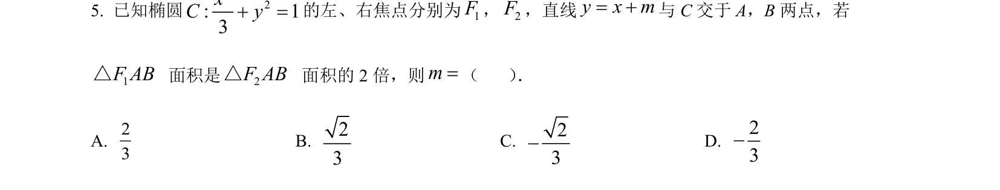
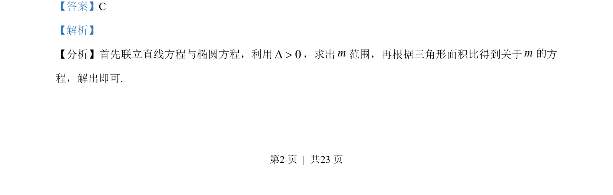
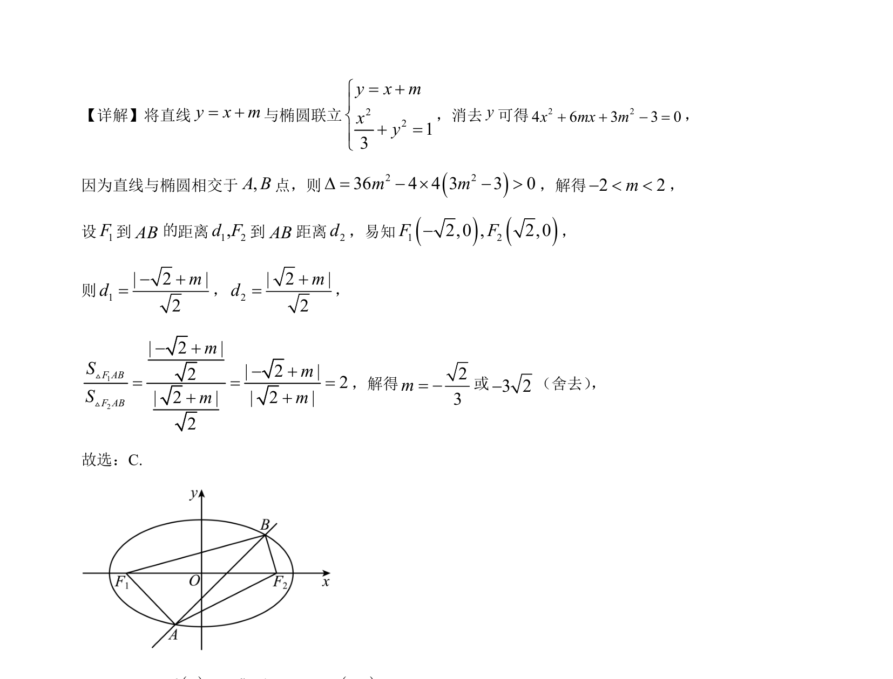

考点：椭圆标准方程 直线与椭圆的位置关系 点到直线距离公式 三角形面积

直线与椭圆联立，通过判别式求参数范围，结合三角形面积比解出参数值。


📄 原 PDF 第 2 页：
素材/真题/吉林/2008-2024·（吉林）数学高考真题/2023年高考数学试卷（新课标Ⅱ卷）（解析卷）.pdf
【答案】C 【解析】 【分析】首先联立直线方程与椭圆方程，利用0D >，求出m范围，再根据三角形面积比得到关于m方 程，解出即可. 的